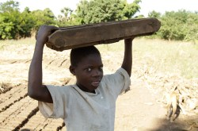

credit: ticklemymonkey99 (cc)
credit: Matt Floreen (cc)
Below are links to sources used on this site:
United States. World Factbook. , 2010. Web. 2 Nov 2010. <https://www.cia.gov/library/publications/the-world-factbook/geos/mi.html>
United States. Background Note: Malawi. , 2010. Web. 2 Nov 2010. <http://www.state.gov/r/pa/ei/bgn/7231.htm>.
Wessel, Rhea. "Berliner Wasserbetriebe Gets RFID Tagging Project Flowing." RFID Journal (2007): 1-2. Web. 2 Nov 2010. <http://www.rfidjournal.com/article/view/3110/1>.
All images have source credit linked at their captions.